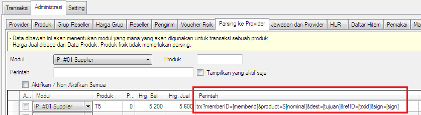
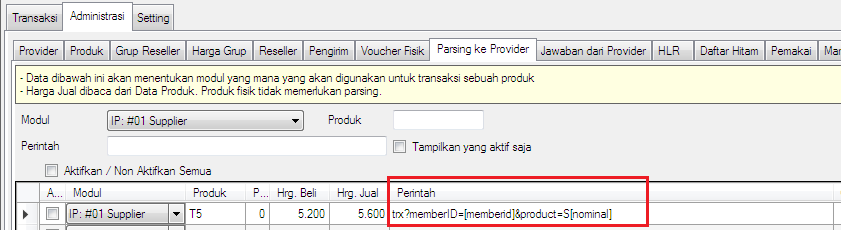

Auto Parsing IP
Parsing transaksi Host to Host via IP ke sesama software OtomaX dibutuhkan beberapa parameter, antara lain memberid, product, dest, refid dan sign selengkapnya klik disini.

Namun mulai v4.0.1 Anda dapat tidak mencantumkan dest, refid dan sign di parsing, sebab akan secara otomatis dilengkapi oleh sistem sehingga parsing menjadi lebih singkat. Perhatikan gambar dibawah ini:

Hal ini berkat adanya fitur Auto Parsing IP di OtomaX mulai v4.0.1. Apabila OtomaX Anda belum versi tersebut, lakukan update dahulu klik disini; dan apabila belum memiliki OtomaX klik disini.